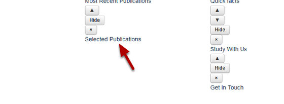
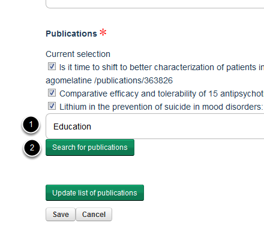
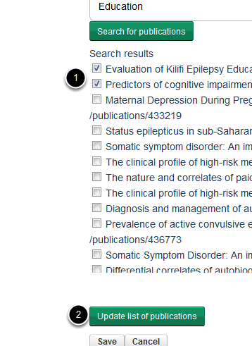
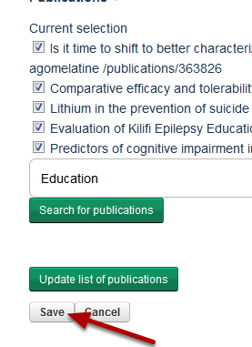

Add Publications to a Selected Publications Portlet
Shows you how to add publications to a Selected Publications Portlet.
Portlets
Login to your site. Click on Portlet on the toolbar at the top of your homepage.
Selected publications portlet

Click on the name of your Selected Publications portlet.

- Enter a keyword or publication title into the search box.
- Click on Search for publications.

- Select the publications you would like to add to your publications list.
- Click on Update list of publications.
Save your changes

Click on Save.